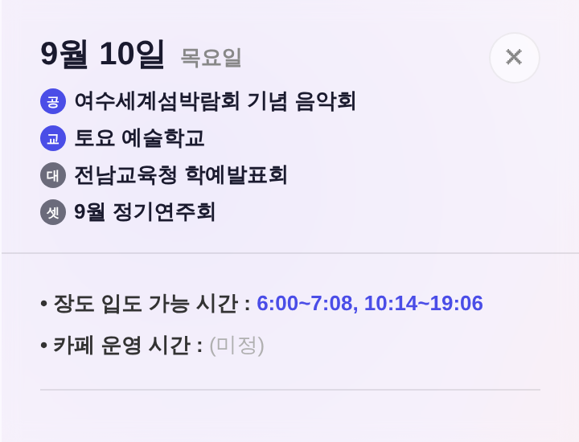

| 구간 | 내용 |
|---|---|
.panel-hdr-labels | flex-wrap:wrap → flex-direction:column (1행 1건) · gap 6→5px |
.panel-hdr-prog | 글자색 var(--accent) → var(--text) — 종류 구분은 배지 색이 맡는다(셀과 동일 역할 분담) · 긴 이름 말줄임 |
.panel-hdr-dot (신설) | 캘린더 셀 배지 규격 그대로 계승: 원 16px · 글자 8px/600 · 글자색 var(--surface-solid) |
perfBadgeLb() / perfBadgeBg() (신설) | 배지 문자·색 공용 1출처로 추출 — 셀(renderPerfsHtml)과 패널이 같은 함수를 쓴다(어긋남 원천 차단) |
| 배지 | 뜻 | 색 |
|---|---|---|
| 공 | 기획공연 | var(--accent) |
| 교 | 예술교육 | var(--accent) |
| 전 | 전시 | 패널 헤더에서는 제외(기존과 동일 — 전시는 아래 섹션이 담당) |
| 대 | 대관 | var(--neutral-text) 무채색 |
| 셋 | 셋업일 | var(--neutral-text) 무채색 |
· python3 tools/check_design.py → 통과, raw hex 1605/1605 무증가(신규 색 0)
· node tools/scratch/smoke_boot.mjs → 부팅 에러 0
· 캡처 재현: node tools/scratch/shot_panel_hdr.mjs <index.html> <out.png>